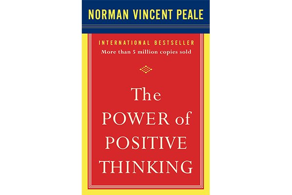
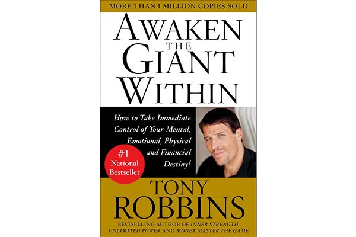
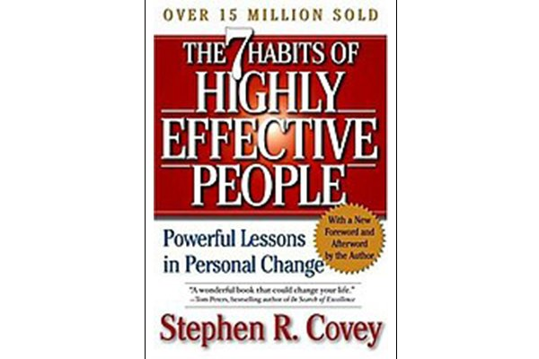
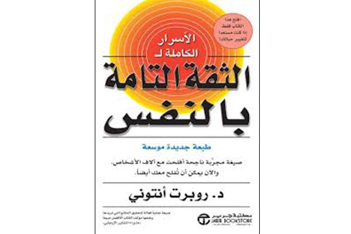
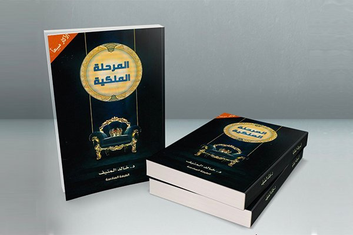
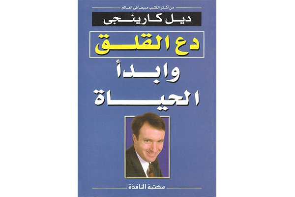
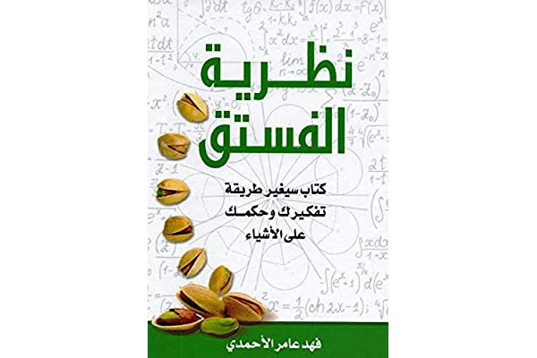

أفضل 10 كتب لتطوير الذات
إذا لفت انتباهك عنوان المقال فأنتِ حتماً تسعين لتحسين نفسك وتحسين جودة حياتك، وهذا الأمر بغاية الأهمية، فالنفس تحتاج دوماً إلى شحنها وتهذيبها كما تحتاج السيارة للبنزين لكي تتحرك وتقطع مسافات.
تساعد كتب تطوير الذات في معرفة جوانب القوة والضعف في شخصيتك وفهمها بشكل أفضل، كما تساعد على تعزيز الثقة والإيجابية في نفسك، وتمنحك نظرة تفاؤلية لما حولك.
سنذكر لكِ في هذه المقالة أفضل كتب تطوير الذات التي حتماً سوف تدعمك وتعزز من شخصيتك.
1.قوة التفكير الإيجابي.

للكاتب الأمريكي نورمان فينسنت، وهو من أشهر الكتب في مجال التحفيز والتطوير. يدون الكاتب فيه قصص عن بعض الأشخاص الذين تحولت حياتهم من كآبة إلى سعادة، ومن فشل لنجاح، وكيف تغلبوا على صعاب الحياة وتخطوها.
ويعلمك هذا الكتاب الرائع كيف تفكرين بشكل إيجابي وتثقين بالله ثم بقدراتك وكيف أن قوة التفكير الإيجابي تكمن في قوة الثقة بالنفس.
2.أن تكون نفسك للدكتور شريف عرفة.
الدليل العلمي للسعادة والنجاح. يقول أرسطو" السعادة هي الهدف الذي يسعى إليه الإنسان منذ الميلاد حتى الوفاة"
يتحدث الكتاب عن مفهوم السعادة وما هو الذي يجعلنا سعداء هل هو المال أم التدين أم العطاء؟
هذا الكتاب سوف يغير مفاهيمك حول السعادة وارتباطها بكثير من الأمور الخارجية.
3.أيقظ العملاق الذي بداخلك للكاتب أنطوني روبنز.

يساعدك هذا الكتاب على التحكم بقدراتك الذهنية والعاطفية والجسمانية والمالية عن طريق تطبيق مبادئ رئيسية للتحكم في الذات.
4.العادات السبع لستيفن كوفي.

من أروع كتب تطوير الذات التي سوف تكررين قراءتها حتماً، يذكر الكاتب في هذا الكتاب العادات السبع التي ستساعدك لتصبح شخص أكثر فعالية.
5.أسرار الثقة بالنفس لروبرت أنتوني.

ليس بالضرورة أن تكون ثقتك بنفسك ضعيفة لقراءة هذا الكتاب فهو كتاب يحمل الكثير من المعلومات الثرية عن الثقة بالنفس والقدرة على التغيير وكيفية التعامل مع المشاكل اليومية.
6.قوة الثقة بالنفس للدكتور إبراهيم الفقي.
من الكتب الشهيرة في التنمية البشرية وتطوير الذات ورفع الثقة بالنفس، فهو يعد من أهم المصادر في تطوير الذات والثقة بالنفس.
7.حياة بلا توتر للدكتور إبراهيم الفقي.
يتكلم الكتاب عن محاولة عيش الحياة دون توتر وإرهاق نفسي وذهني، وكيف أن سعادة الإنسان ترتبط بقدرته على التحكم بشعوره وتقديره للأمور من حوله، كما يذكر الكاتب في الكتاب أضرار التوتر على جسم الإنسان.
8.المرحلة الملكية للدكتور خالد المنيف.

أحد الكتب القيمة في مجال تطوير الذات وينصح جداً باقتنائه، عند قراءتك للكتاب سوف تشعرين بالارتياح والسعادة والطمأنينة حيث إنّ أسلوب الكاتب سلس ويقدمه بأسلوب تحفيزي جميل. يشير الدكتور في هذا الكتاب إلى مرحلة مهمة في حياة الإنسان وتدعى بالمرحلة الملكية حيث يجد المرء نفسه في حالة من القناعة والهدوء والتسامح وكتم الغضب.
9. دع القلق جانبا وابدأ الحياة – ديل كارنيجي.

من أشهر الكتب تأثيراً ومبيعاً في العالم، ويفسر الكاتب في هذا الكتاب كيف للقلق بأن يفسد حياة الإنسان، كما يعرض مشاكل الأرق والضجر وبعض النصائح والتوجيهات للتخلص من هذه الأمور.
10.نظرية الفستق.

هو أحد إبداعات الأديب السعودي فهد الأحمري. يحمل الكتاب رغم بساطته كثير من الأمور التي تخص تطوير النفس. وظيفة هذا الكتاب تتمثل في استكشاف الدافع الداخلي للإنسان قبل تطويره لذاته والانتقال إلى ما هو خارجي.
يقوم الكاتب بعرض أفكار جميلة مبتكرة لحل المشاكل الحياتية واليومية لشحن الطاقة الإيجابية في نفس القارئ، وأشار فيه أنه لا يجب أن تتبع قصص الفاشلين حتى وإن اشتركت في الأسباب لأن كل شخص هو مزيج خاص من الأمور النفسية الوراثية والثقافية ولا يمكن أن يتكرر السبب والعامل مرتين، لذلك لا تنظر أبداً إلى المحصلة، اجمع أسبابك واتجه إلى هدفك مهما كانت الصعاب.
إن لم تكن هذه الكتب على قائمتك لهذا العام، ننصحك باقتنائها وقراءتها الآن، وإن وجدت صعوبة في إيجاد أحد الكتب بالمكتبات فيمكنك تحميل النسخة الإلكترونية منها.